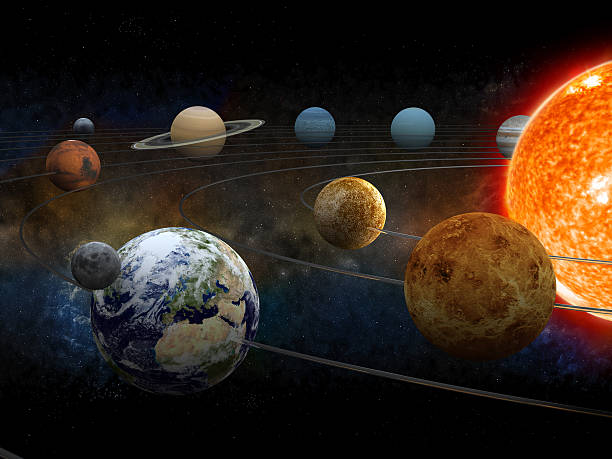

1. Доба на Венері довша за її рік
Венера обертається навколо своєї осі надзвичайно повільно — один повний оберт триває 243 земні доби. Водночас повний оберт навколо Сонця вона робить швидше — за 225 земних діб.

Венера обертається навколо своєї осі надзвичайно повільно — один повний оберт триває 243 земні доби. Водночас повний оберт навколо Сонця вона робить швидше — за 225 земних діб.
Згаслий вулкан Олімп на Марсі є найвищою відомою горою в Сонячній системі. Його висота становить близько 21,9 км, що майже втричі перевищує висоту земного Евересту.
Майже вся маса Сонячної системи зосереджена в нашій зірці. На всі планети, супутники, астероїди та комети разом припадає лише 0,14% загальної маси.
Вісь обертання Урана нахилена майже на 98 градусів, тому планета ніби «котиться» по орбіті на боці. Через це кожен полюс 42 роки поспіль освітлюється Сонцем, а наступні 42 роки перебуває в повній темряві.
Середня густина Сатурна становить лише 0,687 г/см³, що менше за густину води (1 г/см³). Якби існував океан відповідного розміру, цей газовий гігант тримався б на його поверхні.
Велика червона пляма — це гігантський антициклон в атмосфері Юпітера, за яким астрономи спостерігають уже понад 300 років. Його розміри настільки великі, що всередині легко помістилася б уся наша планета.
Через потужні гравітаційні сили Юпітера та сусідніх супутників надра Іо постійно розігріваються. На його поверхні розташовано понад 400 діючих вулканів, які викидають лаву та сірку на висоту до 500 км.
Попри велику віддаленість від Сонця, в атмосфері Нептуна фіксують найшвидші вітри в Сонячній системі. Їхня швидкість може досягати 2100 км/год, що перевищує швидкість звуку на Землі.